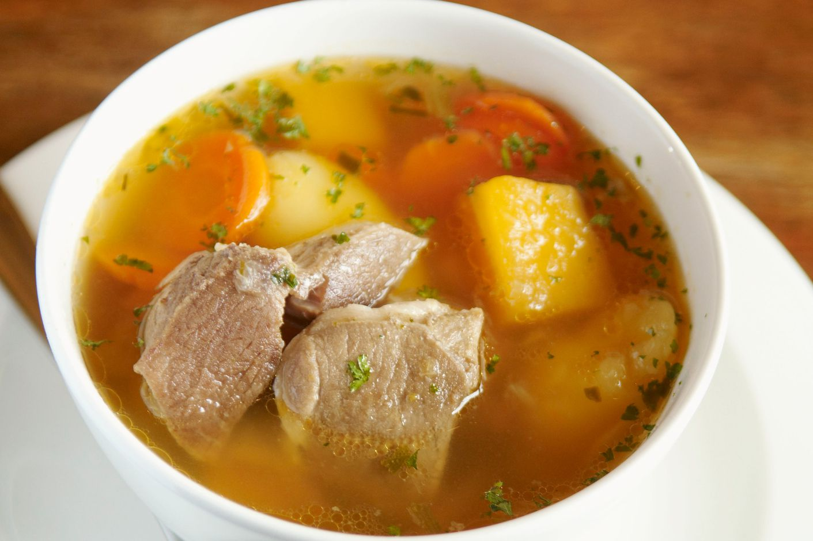
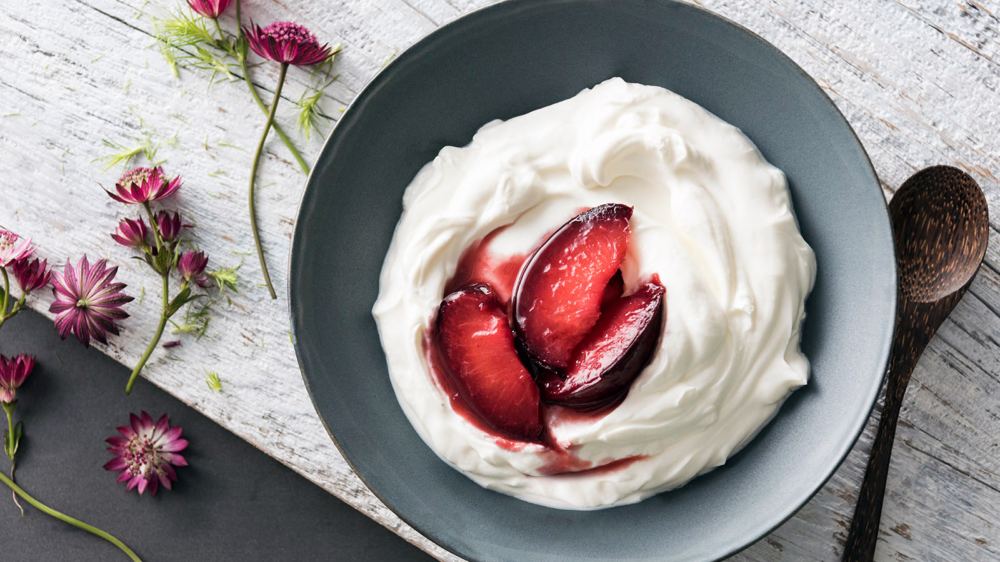
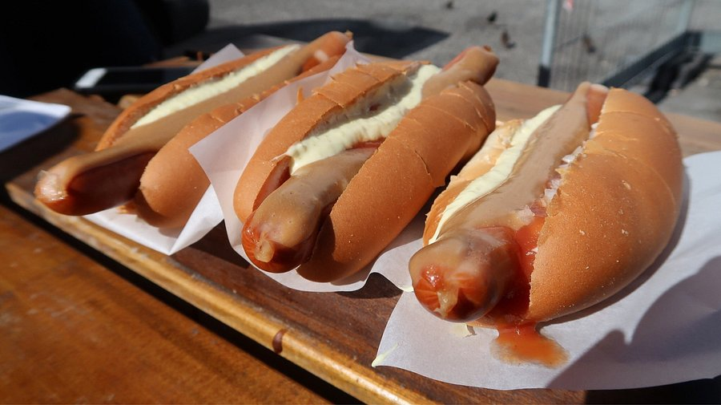
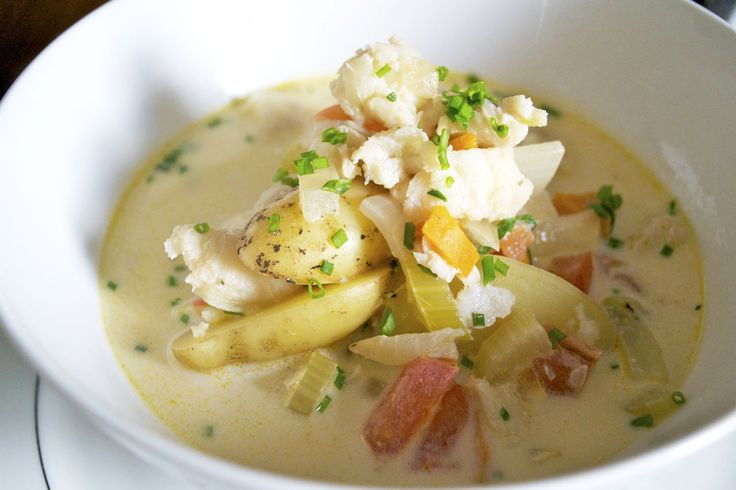

Food

Lamb Soup (Kjötsúpa)
A traditional Icelandic dish made with tender lamb, root vegetables, and herbs—hearty and perfect for cold weather.

Skyr
A creamy dairy product similar to yogurt but thicker and higher in protein—often enjoyed with fruit and honey.

Hot Dogs (Pylsur)
Surprisingly famous! Icelandic hot dogs are made from lamb and served with sweet mustard, remoulade, and crispy onions.

Plokkfiskur
A comfort food made from fish, mashed potatoes, onions, and béchamel sauce. It's deliciously creamy and warm.

Hákarl
A fermented shark dish that is an acquired taste—often tried by adventurous tourists looking for an Icelandic challenge!